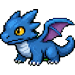

 Wind
WindTap a stage to read its story.
Draklet is a bright cobalt-blue dragon hatchling with wide golden eyes, stubby wings it cannot yet use for flight, and a short pointed tail it waves constantly for balance. Two small head-frills angle back like determined little fins, and its claws are surprisingly sharp for such a compact body. It lives near the Lava Crater's edge vents, where it snaps at rising heat thermals trying to ride them - launching itself, flapping frantically, falling, and immediately trying again.
Field note: Draklet has attempted and failed to achieve flight 4,000 times before its first successful glide - observers find this deeply motivating.
Lava Crater. Draklet and its family are found in the Lava Crater. See everyone who lives there.
Share a Bond Food that matches its types to become friends. Draklet loves:
A Bond Food is not a trick. It joins your spirit with the Kimuro's spirit, and only when it chooses you.
Print the Kimuro adventure packs: mazes, cards, a board game and Bond Mark medals.
See the printable packs